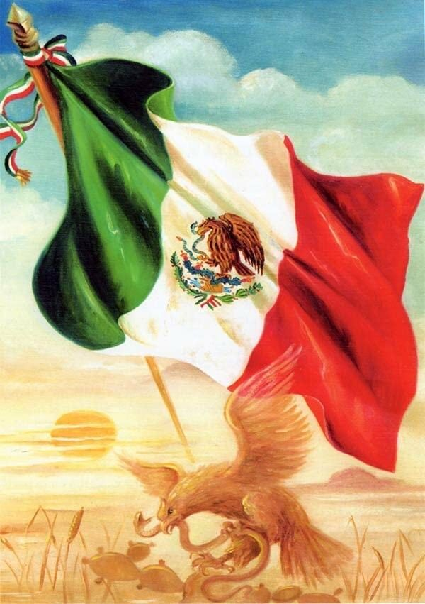
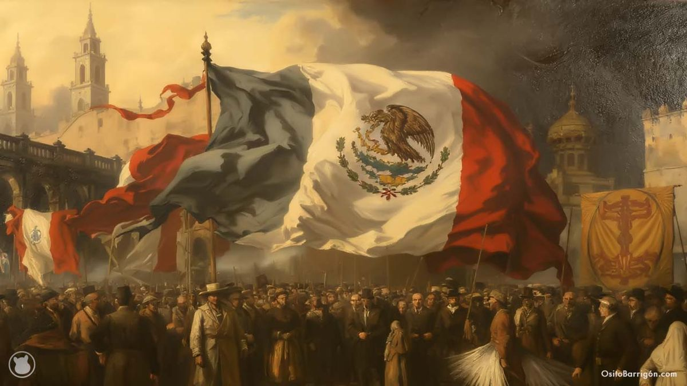
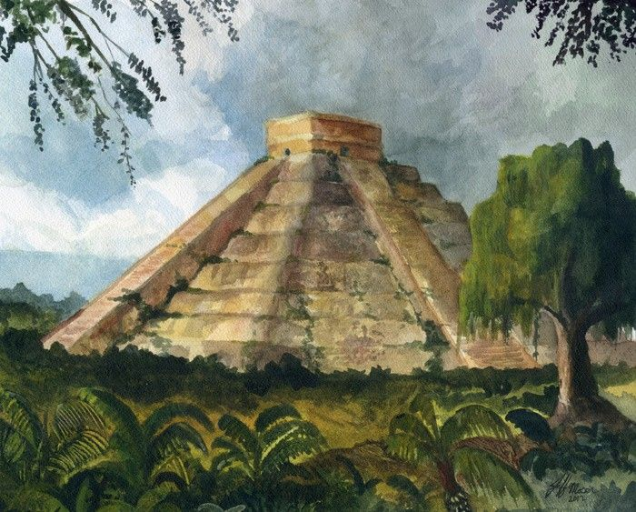
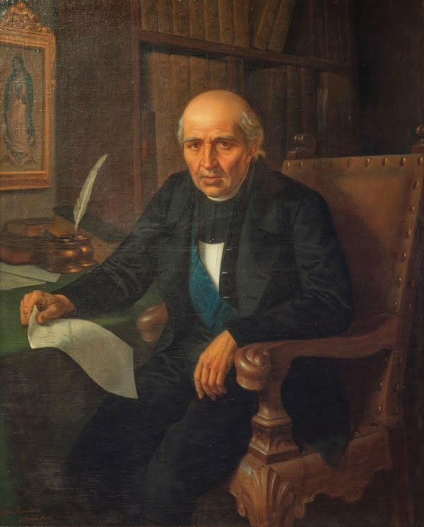

Septiembre es sinónimo de fiesta, historia y orgullo cultural, especialmente en el mundo hispanohablante. Conocido popularmente como el "Mes Patrio", este mes marca el aniversario de la independencia de varias naciones latinoamericanas —como México, Chile y gran parte de Centroamérica—, llenando las calles de música, colores vibrantes y platillos tradicionales, como Pozole, que rico ya quiero comer pozole.

Fechas Importantes (｡･∀･)ﾉﾞ
Datos Curiosos （⊙ｏ⊙）
Personajes Importantes (ﾟヮﾟ )